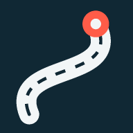

Wayward
Generate new route
Keep this one
Tap the map where the route should go
Cancel
Where to today?
Total distance
km
10 km
25 km
50 km
75 km
100 km
Round trip
Loops back to where you started
Highways
Autobahn & Schnellstraße allowed
Bystreets
Normal mix of roads
Exact streets
Areas to explore
Add a stop the route must pass
Pick on map
Generate random route
Finding your location…
Your route
Distance
–
Time
–
Turns
–
Start
End
Start navigation
Navigate home
New route
Save GPX
Change settings